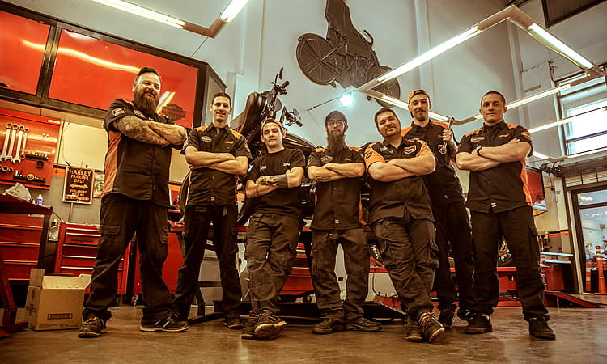

Nuestro negocio
Broken Chains comenzó siendo un simple grupo de motociclistas aficionados que recorrían las calles de la Patagonia en 1994, hasta que eventualmente se concretó una organización y se abrió un taller, fundando así la empresa. Con el paso del tiempo la empresa fue creciendo más y más y se fue extendiendo. Se mejoraron los talleres y las instalaciones en general, además de agregar un arsenal de motocicletas Harley Davidson que se usarían para proveer al cliente un viaje único. En ese momento no solo recibimos clientela de origen nacional sino también de origen internacional. Siguió pasando el tiempo hasta el día de hoy y adquirimos un bar, además de construir algunas cabañas listas para rentar, convirtiéndonos en una empresa de alto calibre y una de las mejores del país en proveer este tipo de servicio.
El bolsón
El Bolsón se encuentra en el departamento Bariloche, al sudoeste de la provincia de Río Negro y a 18 Km. del Parque Nacional Lago Puelo en la Provincia de Chubut. Favorecido por un microclima apacible, este pueblo de montaña está preparado para recibir a todo tipo de visitantes. Naturaleza, aventura, historia, mitos, cultura y tranquilidad son algunos ingredientes que garantizan unas gratas vacaciones. A 120 Km, hacia el sur de Bariloche, por un magnífico camino de montaña, nos encontramos con el valle de El Bolsón, una región que centra su actividad en el cultivo orgánico de la tierra, las artesanías, la producción de dulces y cerveza y el turismo.
Atención al cliente
Brindamos una atención de lúnes a sábados en donde nuestros representantes darán una soporte de manera eficaz y eficiente, ayudándolo en cualquier inconveniente. Además, el mecánico está abierto las 24hs por lo que si su paquete o membresía le provee la opción de tomar ventaja de ese servicio, entonces usted puede ir en todo momento tanto para consultas como si la motocicleta sufre un avería. Como un agregado, nuestros mecánicos también serán capaces, en el caso de solicitárselo, de reparar también otros tipos de vehículos, aunque eso tendrá un costo adicional.
Nuestras instalaciones
Contamos con una cantidad de tres espaciosos talleres en donde usted podrá esperar a que le reparemos su vehículo mientras se toma una cerveza en el bar, o puede simplemente dejarlo en el taller e ir a completar sus quehaceres. Le ofreceremos una dotada comodidad a nuestros clientes mientras contraten los servicios de Broken Chains. Disponemos, también, de una serie de cabañas en el corazón de la Patagonia argentina para que usted, con su familia o amigos, o solo, pueda disfrutar de la invasiva tranquilidad de la naturaleza en su máximo esplendor. Como si fuese poco, contamos con un bar al aire libre con maravillosas vistas.
Estándar de calidad
Trabajamos solo con repuestos de alta calidad originales de Harley Davidson para que su moto tenga lo mejor de lo mejor. Además, todos nuestros mecánicos, así también como nuestros talleres, están verificados por la compañía Harley Davidson, cumpliendo con todos los estándares de calidad y proveyendo todas las comodidades posibles a nuestros clientes.